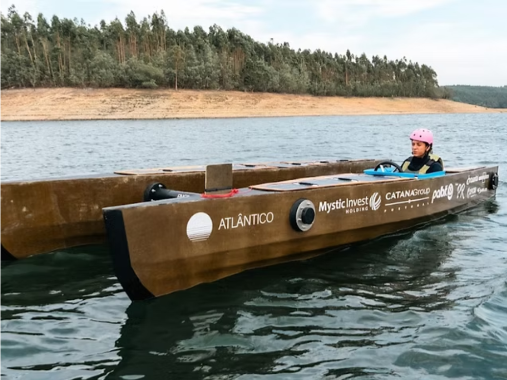

Estudantes da FEUP constroem barco solar com fibra de linho
Um grupo de estudantes da Faculdade de Engenharia da Universidade do Porto apresentou o “Atlântico”, um barco solar já distinguido em competição nacional.
Por Joana Araújo Cardoso

| Portugal Boat ChallengeA construção do molde para o casco arrancou em novembro de 2024. Gonçalo Marques, atual Líder de Equipa, explicou onde surgiu a ideia: “Os 8 fundadores começaram a fazer alguns desenhos, a idealizar aquilo que seria o protótipo”.
O “Atlântico” tem seis metros de comprimento, dois metros de largura e está equipado com 14 painéis solares. Dispõe de apenas um lugar, destinado ao condutor, e tem uma autonomia aproximada de uma hora e meia. O casco foi construído em fibra de linho, um material pouco utilizado em embarcações de competição.
Segundo Diogo Leitão, Engenheiro Chefe da equipa, a escolha do material representou um desafio técnico. “[A fibra de linho] é uma fibra pouco estudada no setor competitivo, porque as suas propriedades são inferiores à fibra de carbono e fibra de vidro, as fibras sintéticas. Então é um desafio incorporá-lo no setor competitivo, mantendo ainda assim a performance e eficiência que queríamos ter”, afirmou.
A embarcação está equipada com três asas subaquáticas (hydrofoils), que permitem elevar o casco até cerca de 50 centímetros acima da superfície da água.
“Conseguimos andar ao dobro da velocidade para o mesmo consumo energético, portanto lá está, conseguimos ganhar muito alcance, o que é muito relevante para embarcações elétricas, (…) que, tal como sabemos, as baterias são sempre limitadas e um fator limitante nestas embarcações.”
Criada em 2023, a FEUP Academic Solar Team (FAST FEUP) visa desenvolver soluções de mobilidade marítima sustentável, através da aplicação de tecnologias solares e elétricas.
O desenvolvimento do projeto contou com o apoio de várias empresas e instituições. A equipa refere que o processo de angariação de parceiros foi particularmente difícil numa fase inicial, enquanto o protótipo não ganhava ainda forma física.
No verão de 2025, a FAST FEUP foi distinguida com dois prémios no Portugal Boat Challenge. A equipa prepara agora um novo protótipo de menores dimensões, com capacidades de navegação autónoma, e pretende continuar a participar em competições internacionais, entre as quais o Monaco Energy Boat Challenge.